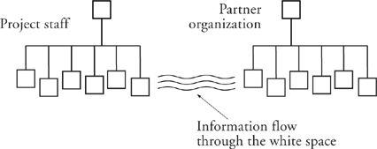

Control of Information
On a recent consulting assignment, I met with a group of process improvement researchers who’d been taking surveys among management staff. They concluded that many of these managers were spending as much as 80 percent of their time in meetings. They asked me if I didn’t think that was excessive. I replied that 80 percent of a manager’s time might reasonably be spent with his/her workers. However, it seemed a shame to me that these managers thought of that time as meetings; I’d rather they were spending their time one-on-one with their people, or in get-togethers that were so ad hoc as to belie the description “meeting.” In some confusion, the surveyors told me that the managers were spending that 80 percent of their time in meetings with people other than their own workers. Whatever time they spent with their own people had to come out of the remaining 20 percent.
This is a considerably different picture (and not a pretty one). What on earth could be going on during 80 percent of those managers’ days? I’m afraid I know. The managers’ time is spent in meeting with clients, project stakeholders, and other external entities, all the various parties to the work who are not direct reports. And then they are shuttling what they learn from these partner organizations down to the people below them on the org chart.
The premise here is that the hierarchy lines on the chart are also the only communication conduit. Information can flow only along the lines. But this is a disaster. The hierarchy lines are paths of authority. They are far too narrowband for all the information that needs to be communicated. Communication in healthy companies takes place in the white space.

When communication happens only over the hierarchy lines, that’s a priori evidence that the managers are trying to hold on to all control. This is not only inefficient but an insult to the people underneath. An Eve would never work for such a manager.